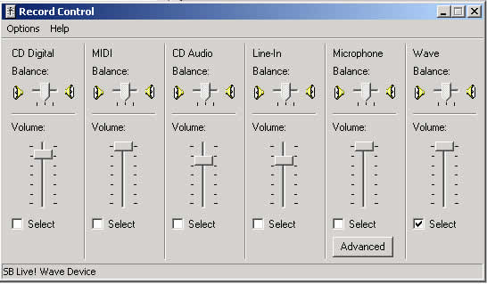
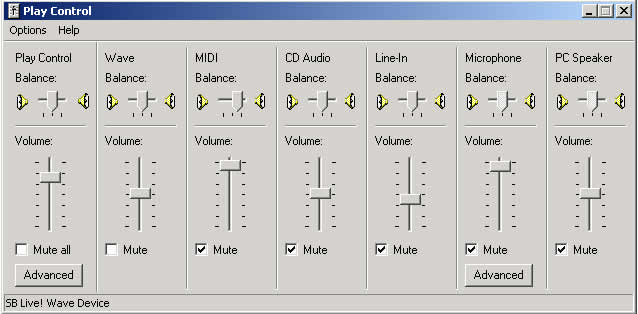

DSSF3 > RA > Operation Guide > How to use a Sound Level Meter
Connection with SLM's AC-OUT
When you connect the sound level meter's AC-OUT and PC's line-in jack, you need a stereo mini jack cable and a micro plug to stereo mini plug adapter.
Set the input device to "mixer" or "line-in".

This is Windows volume control (output). Unnecessary devices (LINE or MIC) should be mute. If you don't do this setting, howling may occur during the measurement.

DSSF3 > RA > Operation Guide > How to use a Sound Level Meter